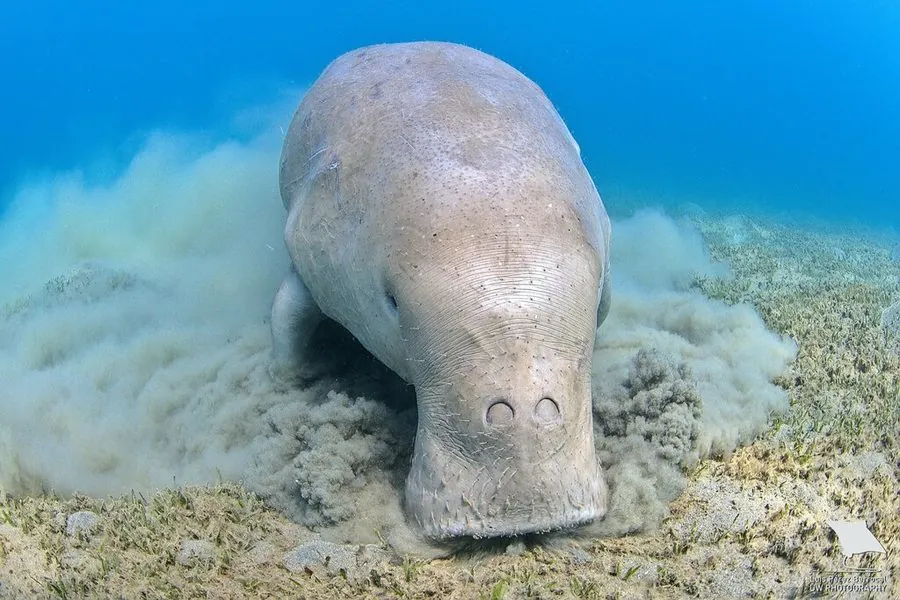

哺乳动物 · 动物界
儒艮 Dugong dugon

生活在热带浅海的草食性海兽，只吃海草，尾鳍像鲸，曾是美人鱼传说的原型，因栖息地退化而受威胁。
- 分类
- 门脊索动物门纲哺乳纲目海牛目科儒艮科属儒艮属
- 栖息环境
- 热带、亚热带浅海的海草床，偏好平静的海湾与潟湖
- 地理分布
- 印度洋和西太平洋热带浅海，中国广东、广西、海南沿海有历史记录
- 保护级别
- IUCN 易危（VU）；中国国家一级保护动物
物种志
儒艮体长 2.4–3.0 米，体重 230–400 kg，雌性大于雄性。它的身体呈纺锤形，皮肤为灰褐色至暗灰色，体表多疤；头部小而圆，吻部向下弯曲，鼻孔位于头顶，便于浮出水面呼吸；前肢为桨状鳍肢，没有后肢，尾鳍呈鲸尾状。
儒艮分布于印度洋和西太平洋的热带、亚热带浅海，从东非、红海到印度、东南亚、澳大利亚北部和中国南部沿海，栖息于海草床丰富的浅水海湾。它是严格的草食性海兽，只吃海草，每天可吃掉大量海草，进食时留下明显的“觅食沟”。儒艮多单独或成对活动，仅在食物丰富处结成小群，性情温和；雌兽妊娠期约 13–15 个月，每胎 1 仔，幼仔会骑在母兽背上。由于海草床退化、沿海开发和渔网缠绕，儒艮被列为易危，中国将其列为国家一级保护动物。
形态与习性
- 食性只吃海草，每天取食大量海草
- 体长2.4–3.0 m
- 体重230–400 kg，雌性大于雄性
- 寿命约 60–70 年
- 繁殖妊娠期约 13–15 个月，每胎 1 仔
- 尾鳍尾鳍呈鲸尾状，与海牛的圆尾不同
- 习性性情温和，多单独或成对活动
趣味知识
- 儒艮只吃海草，是严格草食性的海洋哺乳动物。
- 它的尾鳍像鲸，而海牛的尾巴是圆形的。
- 儒艮浮出水面呼吸时被水手误认，成为“美人鱼”传说的原型。
- 幼仔常骑在母兽背上随行，这是儒艮独特的育幼方式。